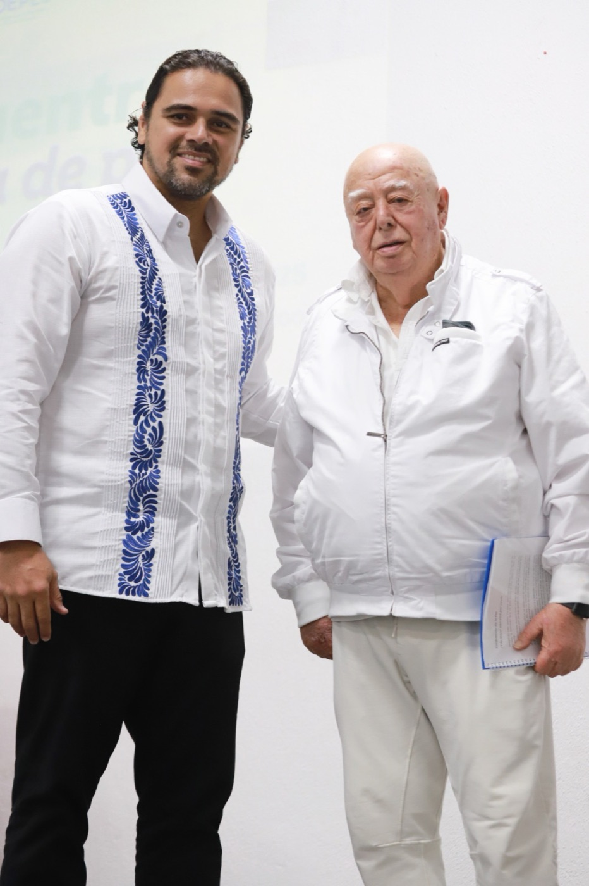
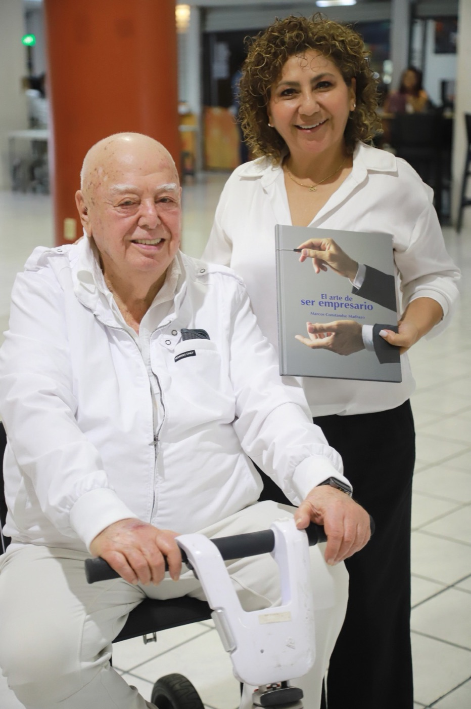
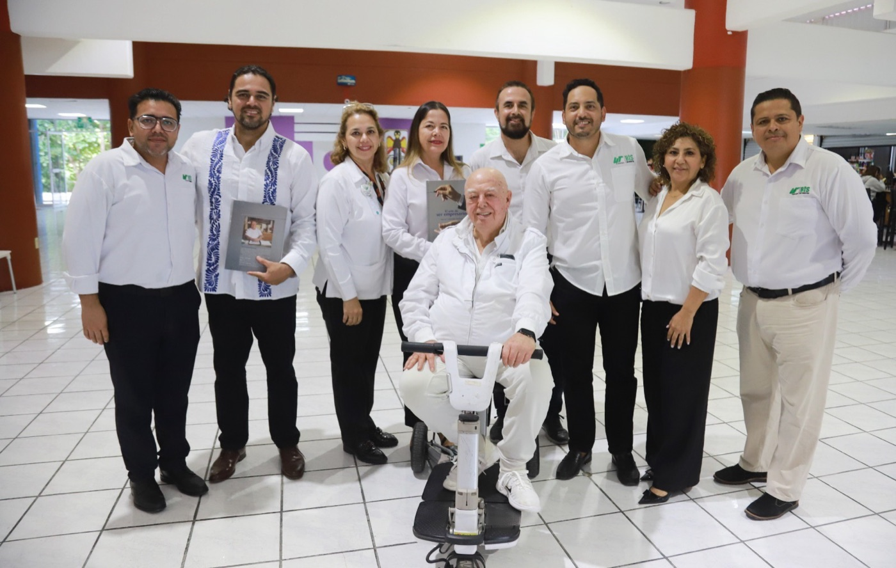
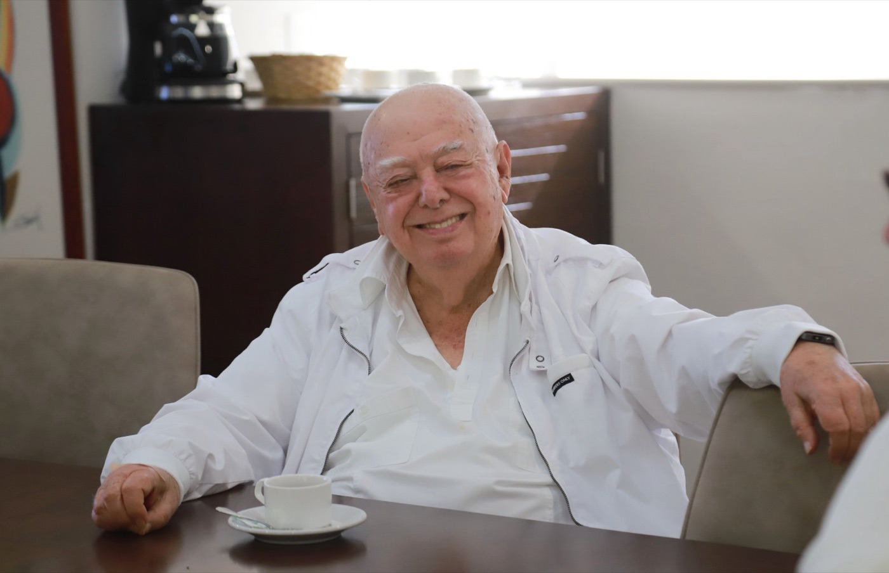
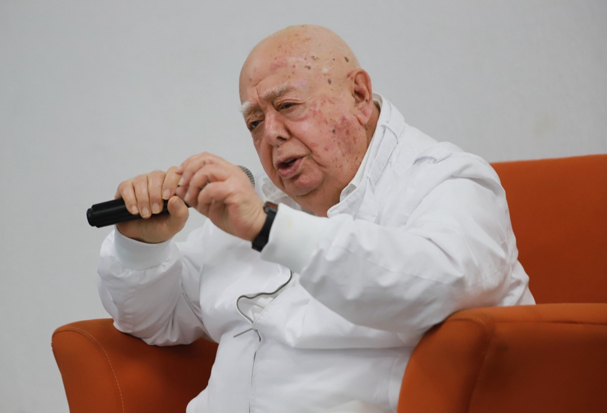

Esta conferencia es una invitación a mirar la vida como un mapa en constante evolución. No pretende ser un compendio de todo el conocimiento humano ni un tratado histórico, sino un ensayo filosófico vivencial, sustentado en la observación, la ciencia y la experiencia personal.
Un mapa para vivir con conciencia
Esta conferencia es una invitación a mirar la vida como un mapa en constante evolución. No pretende ser un compendio de todo el conocimiento humano ni un tratado histórico, sino un ensayo filosófico vivencial, sustentado en la observación, la ciencia y la experiencia personal. Su propósito es inspirar a reflexionar sobre nuestra existencia, nuestras decisiones y la manera en que cada acción puede orientarse hacia una vida más consciente, plena y coherente con la realidad.
Del origen del universo al despertar humano
El recorrido parte del Big Bang, cuando energía e información dieron origen a la materia y, con el tiempo, a la vida. Desde las primeras partículas hasta la aparición del ser humano, la evolución ha sido un proceso de expansión y conciencia creciente. Este viaje, que une ciencia y espiritualidad, nos recuerda que todos formamos parte del mismo impulso creador: una corriente universal que nos invita a comprender que la historia del cosmos también es nuestra propia historia.
La evolución como guía cotidiana
Más que un evento biológico, la evolución es una herramienta para vivir. Comprenderla como un proceso continuo nos permite usarla como brújula en la vida diaria: observar, comparar y aprender de los resultados, las tendencias y las realidades que nos rodean. En cada pensamiento y en cada acto está la posibilidad de avanzar un paso más en la conciencia, reconociendo que el verdadero progreso humano ocurre cuando se une la razón con la sensibilidad y la acción con la intención.
El imperativo ético: el otro es como yo
El camino hacia la plenitud culmina en una propuesta humanista: reconocer al otro como una expresión del mismo espíritu que nos habita. Vivir con conciencia es aceptar que la evolución también ocurre en el corazón, a través del amor, la empatía y la colaboración. Este mensaje invita a no rechazar las ideas que nos incomodan, sino a explorarlas como oportunidades de crecimiento, entendiendo que la felicidad surge cuando actuamos con coherencia entre lo que pensamos, sentimos y hacemos.
FOTOGRAFÍAS
Galería del evento





SIGUE EXPLORANDO
Más eventos
Conferencia
Sesión Solemne de Ingreso a la Sociedad Mexicana de Geografía y Estadística
28 de octubre de 2025Cancún, Quintana Roo
El 28 de octubre de 2025 se llevó a cabo la Sesión Solemne de Ingreso de Marcos Constandse Madrazo a la Sociedad Mexicana de Geografía y Estadística, la institución científica más antigua de América. Este acto, organizado por la Sociedad Andrés Quintana Roo, representó un momento de reconocimiento al compromiso de vida de Marcos con el conocimiento, la planeación y el desarrollo integral de México. Su incorporación simboliza la unión entre la reflexión filosófica, la visión empresarial y la responsabilidad social que han marcado su trayectoria.